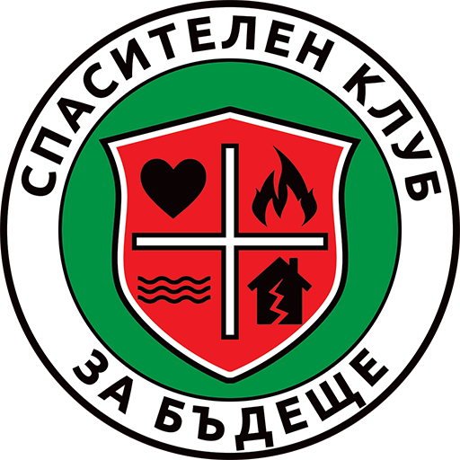

Дефибрилатори (AED) · България
Спасителен клуб за Бъдеще
Спешен телефон 112
Натисни при сърдечен арест
›
Инсталирай: натисни
Сподели
⬆️ →
Към начален екран
.
×
Дефибрилатори (AED) — България
Публично достъпни автоматични външни дефибрилатори. Винаги първо звъни
112
.
Как да помогна при сърдечен арест →
Инсталирай
Дефибрилатор (AED)
Дарен от СКБ